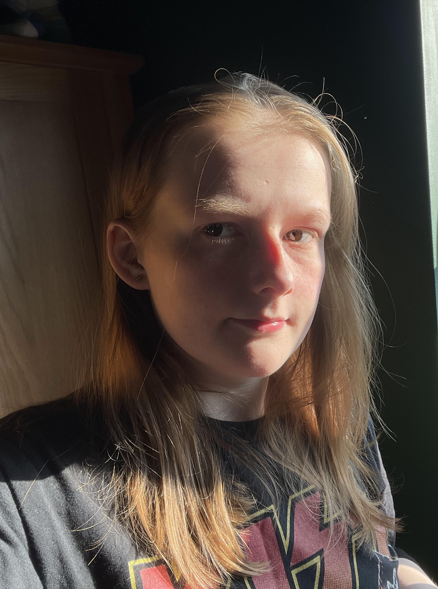

Here you can view my current and past projects, and learn more about me!

I'm Katy and I'm a second year University Student at Sheffield Hallam University. I study BENG HONS SOFTWARE ENGINEERING at Level 5.
I am currently looking for a placement opportunity for 2026/2027 and created this site as a way for me to put my projects into one place, and to make it easier for others to view my work.
Of course, I really enjoy coding and computers! I started getting into coding a little at around 14 years old, as I enjoyed doing it in my computer science lessons. Since then, I have taken an Application Developer Course at Chesterfield College and moved on to University when I decided I wanted a career in tech.
I chose the Software Engineering course, as it has given me the opportunity to not only learn more coding skills but other skills as well that I had not considered before, such as databases and a little project management.
Aside from the projects I have completed at College and Uni I have also started working on some of my own as well, which you will also be able to find here in this portfolio.
Other than coding, some of my favourite hobbies include: gaming, arts and crafts, lego, and music!
I hope you were able to get to know me a little more, and enjoy looking through my works!